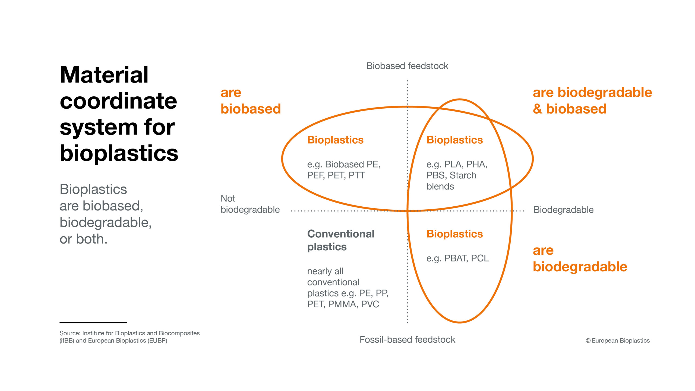
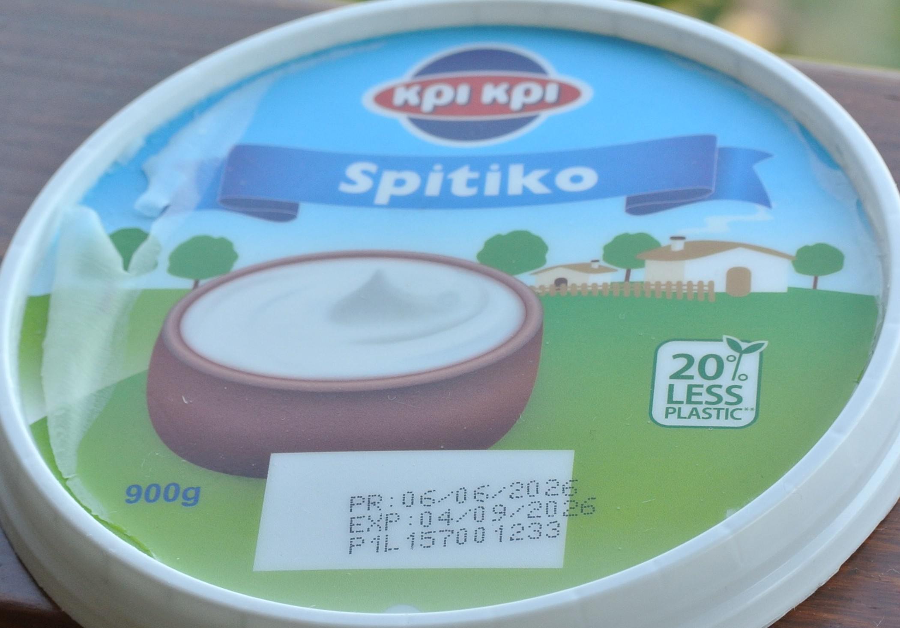
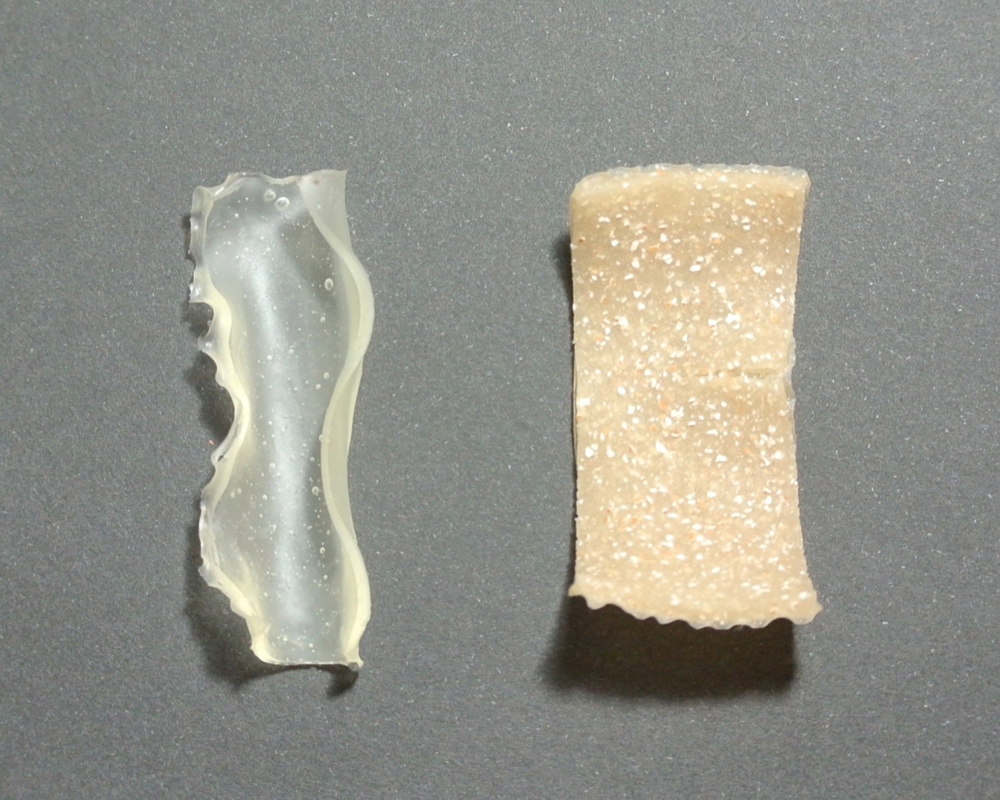

Starch-based bioplastic and eggshell reinforcement
The many issues of plastics
Many of the issues with plastics are by now apparent: their dependance on fossil fuels; the pollution generated by their production, as well as by the final product, affecting air, water and soil - subsequently harming all life; their negative impact on living beings: changing microbial communities, injuring animals and quietly leaking toxins, carcinogens, heavy metals and endocrine disruptors, not only in our environment, food and water, but also directly in us since microplastics have been found in various tissues of different organisms; Being non-biodegradable they build up, and while some of the plastics can be recycled it may result in downcycled (lower quality) product and much like the initial production the process is energy demanding. Furthermore, it’s often hampered by plastics being mixed, rendering them impossible to recycle, and due to the accessibility of fossil fuels and lack of infrastructure needed to make sorting and recycling more feasible, making new plastic is unfortunately oftentimes the cheaper option compared to recycling; Another way in which plastic is dealt with is burning, releasing carbon dioxide, methane and other harmful chemicals [1], [2].
From production and use to their disposal, the harms plastics pose are numerous, and while recycling and degradation are worthy solutions where increasing innovation would be beneficial, the best thing we can do is decrease our use and dependance to these polymers.
What about bioplastics?
The “bio” in bioplastic means that it’s made of a biopolymer, such as starch or cellulose, however, being made of a natural polymer which was derived from living organisms does not necessarily mean that the bioplastic will be biodegradable. Many bioplastics, like bio-PE, bio-PET and others, are made of the same polymer as their conventional plastic counterparts, only that they’re derived from a biological source, for example maize or sugar cane [3]. This does not reduce any of the environmental and health impacts of the product once it is made, they’re equally (non)recyclable, and in certain cases the agricultural practices around growing the crops, the biomass extraction and pre-processing add up to greater emissions compared to fossil fuel refinery [4].
Other bioplastics, such as PLA - the most common bioplastic, need specific temperature, humidity and moisture for a prolonged time to biodegrade, meaning that putting it in a backyard compost isn’t enough, the bioplastic first needs to make its way to an industrial composter where these specific conditions can be controlled, and oftentimes it does not. This goes to show that the “bioplastic” label does not straightforwardly mean eco-friendly plastic, in fact it does not even refer to a singular class of plastics but a range of polymers with many different properties and complex footprints. For example, some petroleum-based plastics which are biodegradable are also labeled as bioplastics, and mixes of bio-based and petroleum-based plastics may also be labeled as bioplastic [5].

These complexities do not mean that bioplastics should be given up on, but rather that detailed material testing, careful life cycle assessment, realistic consideration of the conditions and facilities needed for recycling and degradation, as well as economic feasibility should all be taken into account before releasing them into the market.
For example, starch-based bioplastics are a good candidate because starch is readily available, renewable, and it can be extracted from waste biomass instead of using up land needed for food production to grow starch-rich crops. It’s comprised of amylopectin (70–80%) which is branched, and amylose (20-25%) – mostly a linear polymer. On the other hand, these bioplastics are relatively brittle and water-soluble, which can be improved by the incorporation of fillers like seaweed, clay minerals, calcium carbonate and many others [6], [7].
Eggshells and their potential
In 2024 alone 100 million metric tons of eggs were produced according to the Food and Agriculture Organization of the UN, roughly 17 times as much as the weight of the Great Pyramid of Giza. The eggshells usually end up as waste, however, they can be valorized and used as a natural fertilizer, calcium supplementation, catalyst for biodiesel production, heavy metal adsorbent, bone implant biomaterial and other uses [8].
An eggshell contains around 95% calcite - a polymorph of calcium carbonate (CaCO3), as well as magnesium carbonate (MgCO3), tricalcium phosphate (Ca3(PO4)2) and proteins in smaller percentages, while the eggshell membrane – the white film on the inside of the shell, is rich in collagen and other proteins [9], [10]. The high calcium content makes eggshells have strong mechanical and barrier properties, which starch-based plastic lacks. Incorporation of eggshell powder has been shown to increase stiffness, mechanical strength, as well as hydrophobicity, water vapor barrier properties and thermal stability, while decreasing oxygen transfer rate of starch-based films [11].
My goal
Create materials out of household waste and readily available ingredients for the purpose of making own observations and tests and developing a better understanding of the topic. More precisely I aimed to find out more about: (bio)plastics and their effects, the process and raw materials needed for making (bio)plastics, the possibility of using waste as a resource for bio-based materials, how to fine-tune the properties of starch-based films and the methods used to make them. This was done both by hands-on experiments and literature review.
Materials and Methods
Cornstarch:used as a biopolymer which in the presence of heat and water goes through gelatinization, a process where hydration of the starch occurs and intermolecular bonds are broken transforming the mixture into an amorphous state. Then, during cooling retrogradation happens - amylose and amylopectin reassociate and form an ordered structure [12]. For this experiment an already opened bag of store-bought cornstarch which had expired was used.
Glycerin (99,5% anhydrous):a vegetable origin non-toxic plasticizer added to make the material more flexible and to facilitate film-formation and removal from the mold. It achieves this by separating the amylose and amylopectin chains [7].
Alcohol vinegar (9% acetic acid):the acid acts as a catalyst in the breakdown of starch molecules allowing them to rearrange from branched into linear polymer chains.
Pulverized eggshells:a filler used to increase the stiffness and hydrophobicity of the bioplastic among other effects.
Eggshell preparationThe eggshells were washed to remove residues or dirt, the membrane was not removed, they were boiled for 10 minutes to kill bacteria after which they were dried in the oven at 90ºC for 20 minutes to prevent molding, however air-drying at room temperature was also needed until fully dry.
Left: boiling the eggshells; Right: airdrying.
They were grinded in a mortar and then in a blender to obtain the wanted eggshell powder, however, pieces were still present. A strainer was used to remove the larger ones, while the finer ones remained.
Left: the eggshell powder containing only fine pieces and the removed coarser pieces in a bowl next to it; Right: the eggshell powder used in the reinforced bioplastic.
Production of the bioplastic1 part (1 tbsp ≈15ml) cornstarch is mixed with 7 parts water, 2/3 vinegar and 2/3 glycerin, as well as eggshell powder (containing minimal fine eggshell fragments) for the reinforced bioplastic, one material containing 1/3 and the other 2/3 eggshell powder. The mixture is heated over a water bath at medium heat and continuously stirred until it becomes of desirable viscosity. The recipe is inspired by Giestas.
Solvent-casting and drying
The mixture is poured into molds, in this case plastic lids and silicone molds were used, after which they would dry outside in the shade (avg. day and night T: 36 ºC/18ºC; avg. humidity 35~60%) for 2 days.
This is the most used lab-scale method, but it comes with drawbacks: films have a limited length of 25-30 cm, lower mechanical resistance, water solubility, vapor permeability and higher moisture content compared to other methods such as molding and extrusion. Additionally, it’s hard to scale-up since it requires the evaporation of a large amount of water, and the long drying time makes it hard to standardize the thickness [13].
Results
Starch-based bioplastic: when and how to cast it?
One mold was cast after 20 minutes of heating when the mixture was just starting to become viscous, still it was runny enough that after pouring some in the mold moving it in a slow circular motion was enough to make it spread evenly in a thin layer of ~2mm. The rest of the molds were cast after 30 minutes of heating when the mixture was more viscous and spreading required a spatula, out of the two plastic molds one was spread thinner than the other.
Left: the material cast at 20 minutes while still runny; Right: the material cast at 30 minutes.
All of them became more transparent and thinner with drying. The material cast at 20 minutes gelatinization dried more rapidly than the others and some cracks appearing at the edges. Because of how thinly it was poured removing it from the mold additionally tore it apart.

From the films cast at 30 minutes of gelatinization one was spread out thinner and although it didn’t crack while drying, it was ripped while peeling out of the mold. This was not only due to the thinness of the material and the uneven spreading by hand, but also because of the bigger size of the mold and its sloped edges making it harder to peel out. Nevertheless, a big part of the material was still undamaged, having a foil-like nature.
The dried thinly spread film. Some of the mold’s colors have stayed on the material’s surface.
The thickly spread material gave the best results, after drying the surface became smooth and continuous, taking it out of the mold was easy and no cracks appeared, the material was more flexible and less prone to breaking. Tiny air bubbles can be seen inside it, while on it’s surface the inscriptions which were on its mold are also visible.
The dried thickly spread film.
All of the mentioned molds were plastic, however silicone molds were also used which proved easiest as peeling was not necessary since the bioplastic did not stick to them.
Good practice:
-> Keep in mind the gelatinization time and the viscosity to optimize for the wanted spreadability when casting.
-> Pour the mixture thicker by at least 3-4mm than the intended thickness of the dried film is.
-> Use molds with defined edges, avoid having the material stick to the mold, for example by using silicone molds.
Eggshell-reinforcement
When adding the eggshell powder meticulous mixing is needed to combine the ingredients, the powder forms air-bubbles which should be dispersed. Constant mixing is needed to avoid clumping at the bottom. A reaction can be observed –bubbling and fizzing caused by the acetic acid (CH3COOH) and calcium carbonate (CaCO3) reacting to form carbon dioxide (CO2), water (H2O) and calcium acetate((CH3COO)2Ca) are also formed.
2CH3COOH + CaCO3 → H2O + CO2 + (CH3COO)2Ca
Because the acid used isn’t pure and the reaction stoichiometry is 2:1moles of CH3COOH: CaCO3, most of the CaCO3, at least ~80%, is not converted (calculated based on approximate mass of vinegar and eggshell powder used).
The bioplastics with and without eggshell powder are visibly different, with the eggshell reinforcement giving it a yellow-brown color, opaqueness and rougher surface. It also helped in giving it a more rigid structure and edges.

The reinforcement made the material less prone to tearing, even when cracks appear they do not spread. Interestingly, the two materials have similar flexibility, and the reinforcement made the film completely non-sticky.
References:
[1] O. A. Alabi, K. I. Ologbonjaye, O. Awosolu, and O. E. Alalade, “Public and Environmental Health Effects of Plastic Wastes Disposal: A Review,” J Toxicol Risk Assess, vol. 5, p. 21, 2019, doi: 10.23937/2572.
[2] Alex Olanrewaju Adekanmbi, Emmanuel Chigozie Ani, Ayodeji Abatan, Uchenna Izuka, Nwakamma Ninduwezuor-Ehiobu, and Alexander Obaigbena, “Assessing the environmental and health impacts of plastic production and recycling,” World Journal of Biology Pharmacy and Health Sciences, vol. 17, no. 2, pp. 232–241, Feb. 2024, doi: 10.30574/wjbphs.2024.17.2.0081.
[3] M. Lackner, A. Mukherjee, and M. Koller, “What Are ‘Bioplastics’? Defining Renewability, Biosynthesis, Biodegradability, and Biocompatibility,” Dec. 01, 2023, Multidisciplinary Digital Publishing Institute (MDPI). doi: 10.3390/polym15244695.
[4] L. Chen, R. E. O. Pelton, and T. M. Smith, “Comparative life cycle assessment of fossil and bio-based polyethylene terephthalate (PET) bottles,” J. Clean. Prod., vol. 137, pp. 667–676, Nov. 2016, doi: 10.1016/j.jclepro.2016.07.094.
[5] V. Siracusa and I. Blanco, “Bio-polyethylene (Bio-PE), Bio-polypropylene (Bio-PP) and Bio-poly(ethylene terephthalate) (Bio-PET): Recent developments in bio-based polymers analogous to petroleum-derived ones for packaging and engineering applications,” 2020, Multidisciplinary Digital Publishing Institute (MDPI). doi: 10.3390/polym12081641.
[6] M. K. Gurunathan, R. J. H. Navasingh, J. D. R. Selvam, and R. Čep, “Development and characterization of starch bioplastics as a sustainable alternative for packaging,” Sci. Rep., vol. 15, no. 1, Dec. 2025, doi: 10.1038/s41598-025-00221-0.
[7] F. G. Henning, V. C. Ito, I. M. Demiate, and L. G. Lacerda, “Non-conventional starches for biodegradable films: A review focussing on characterisation and recent applications in food packaging,” Dec. 01, 2022, Elsevier Ltd. doi: 10.1016/j.carpta.2021.100157.
[8] H. Faridi and A. Arabhosseini, “Application of eggshell wastes as valuable and utilizable products: A review,” Research in Agricultural Engineering, vol. 64, no. 2, pp. 104–114, 2018, doi: 10.17221/6/2017-RAE.
[9] Y. Shi, K. Zhou, D. Li, V. Guyonnet, M. T. Hincke, and Y. Mine, “Avian eggshell membrane as a novel biomaterial: A review,” Sep. 01, 2021, MDPI. doi: 10.3390/foods10092178.
[10] M. Baláž et al., “State-of-the-Art of Eggshell Waste in Materials Science: Recent Advances in Catalysis, Pharmaceutical Applications, and Mechanochemistry,” Jan. 27, 2021, Frontiers Media S.A. doi: 10.3389/fbioe.2020.612567.
[11] H. Xu et al., “Eggshell waste act as multifunctional fillers overcoming the restrictions of starch-based films,” Int. J. Biol. Macromol., vol. 253, Dec. 2023, doi: 10.1016/j.ijbiomac.2023.127165.
[12] R. Thakur, P. Pristijono, C. J. Scarlett, M. Bowyer, S. P. Singh, and Q. V. Vuong, “Starch-based films: Major factors affecting their properties,” Jul. 01, 2019, Elsevier B.V. doi: 10.1016/j.ijbiomac.2019.03.190.
[13] L. do Val Siqueira, C. I. L. F. Arias, B. C. Maniglia, and C. C. Tadini, “Starch-based biodegradable plastics: methods of production, challenges and future perspectives,” Apr. 01, 2021, Elsevier Ltd. doi: 10.1016/j.cofs.2020.10.020.